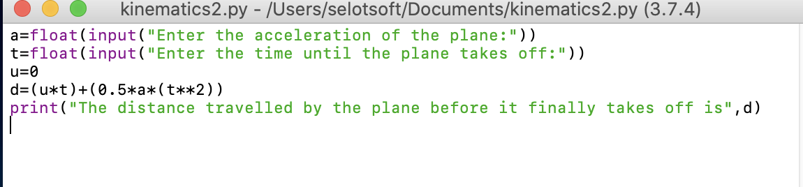
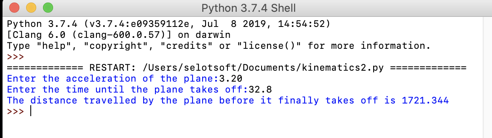
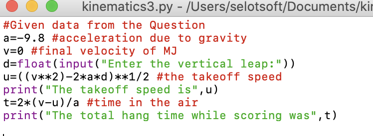
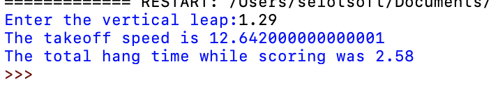

Topic:Kinematics
Example 1: An airplane accelerates down a runway at 3.20 m/s2 for 32.8 s until is finally lifts off the ground. Determine the distance traveled before takeoff?
Solution:a = +3.2 m/s2
t = 32.8 s
vi = 0 m/s
Find: d = ??
d = vi*t + 0.5*a*t2
d = (0 m/s)*(32.8 s)+ 0.5*(3.20 m/s2)*(32.8 s)2
d = 1720 m

Similarly, If we had to determine the distance covered by the plane, before it takeoffs for
any acceleration and time; The following python code will give an accurate solution for harder calculations in lesser time.
 
Example 2: If Michael Jordan has a vertical leap of 1.29 m, then what is his takeoff speed and his hang time (total time to move upwards to the peak and then return to the ground)?
Solution:a = -9.8 m/s2
vf = 0 m/s
d = 1.29 m
Find:
vi = ??
t = ??
vf2 = vi2 + 2*a*d
(0 m/s)2 = vi2 + 2*(-9.8 m/s2)*(1.29 m)
0 m2/s2 = vi2 - 25.28 m2/s2
25.28 m2/s2 = vi2
vi = 5.03 m/s
To find hang time, find the time to the peak and then double it.
vf = vi + a*t
0 m/s = 5.03 m/s + (-9.8 m/s2)*tup
-5.03 m/s = (-9.8 m/s2)*tup
(-5.03 m/s)/(-9.8 m/s2) = tup
tup = 0.513 s
hang time = 1.03 s

Similarly, If we had to determine the distance by the plane, before it takeoffs for
any acceleration and time; The following python code will give it a new way to solve .
 